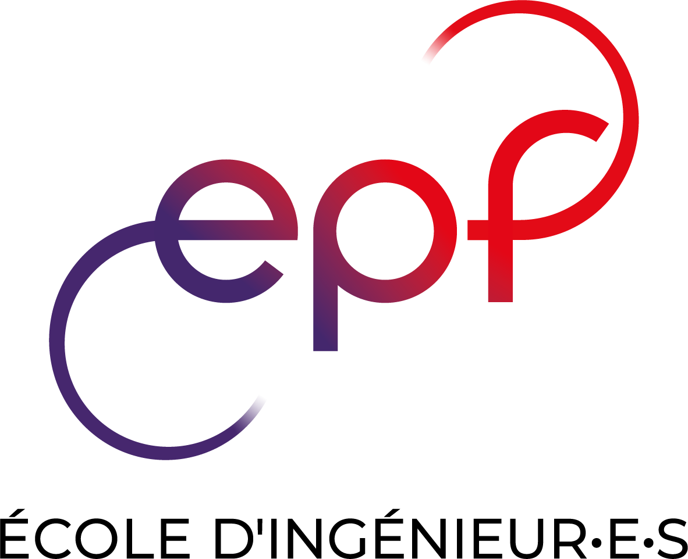
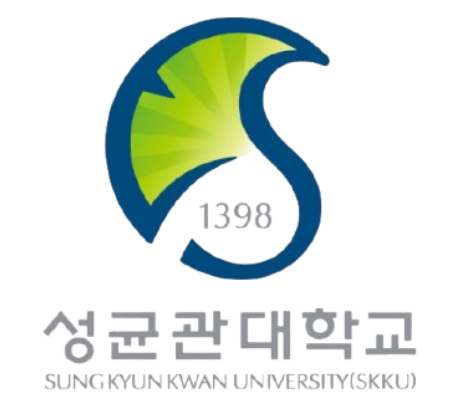
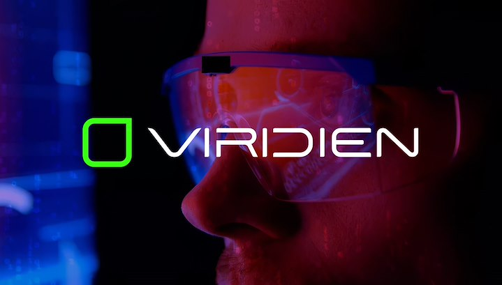
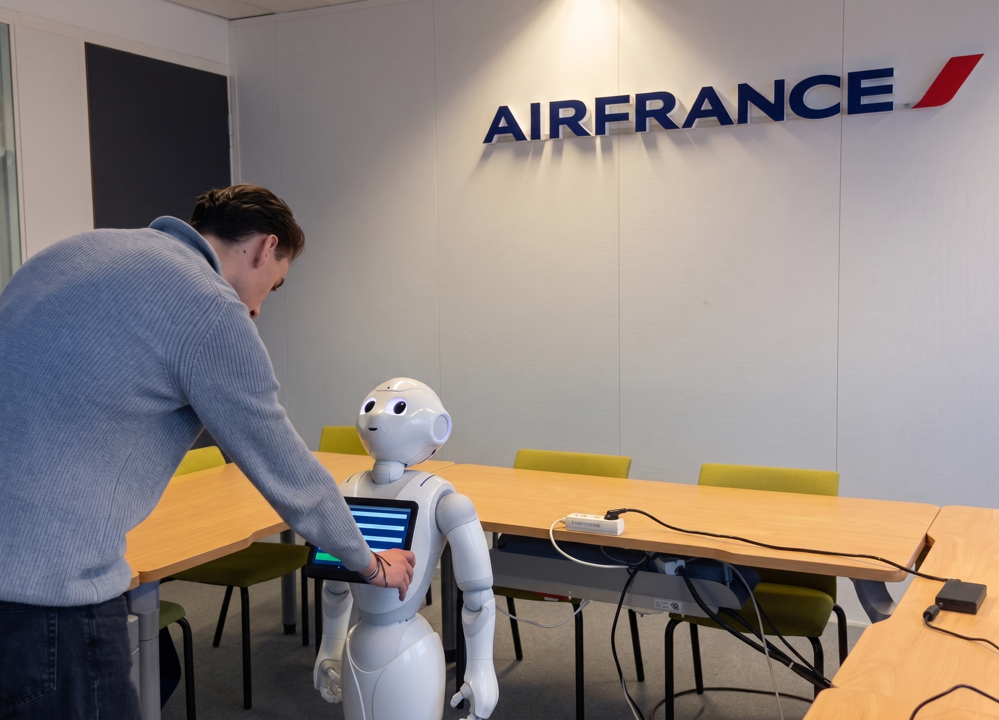
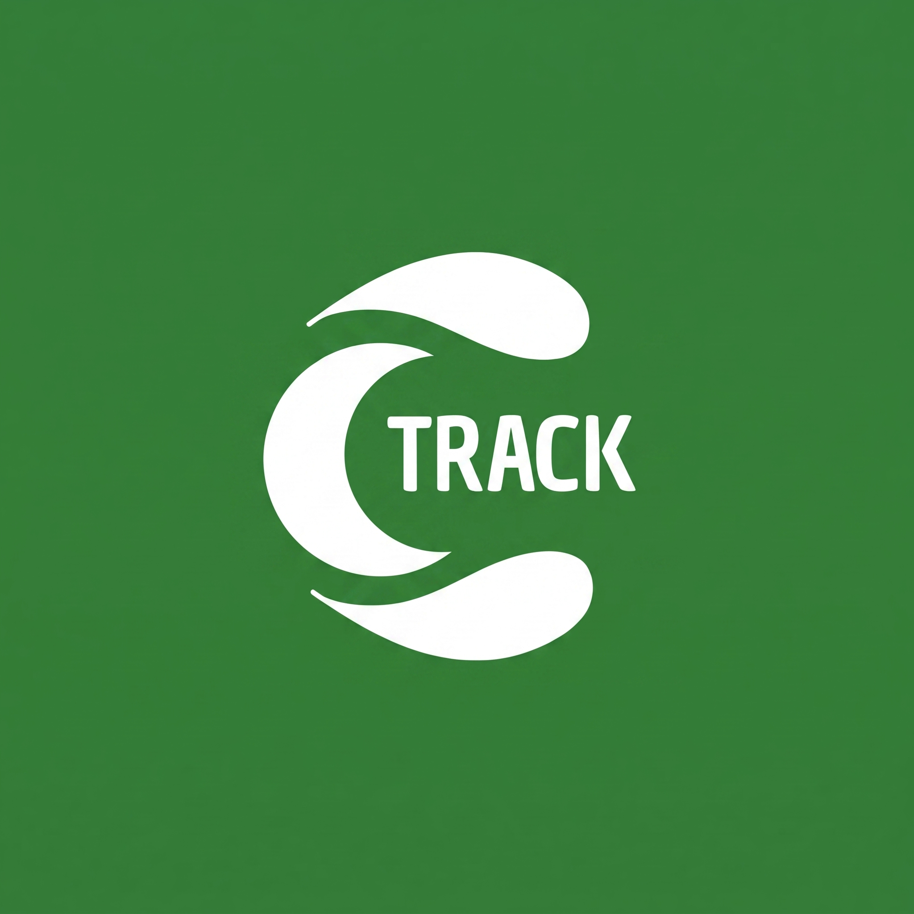
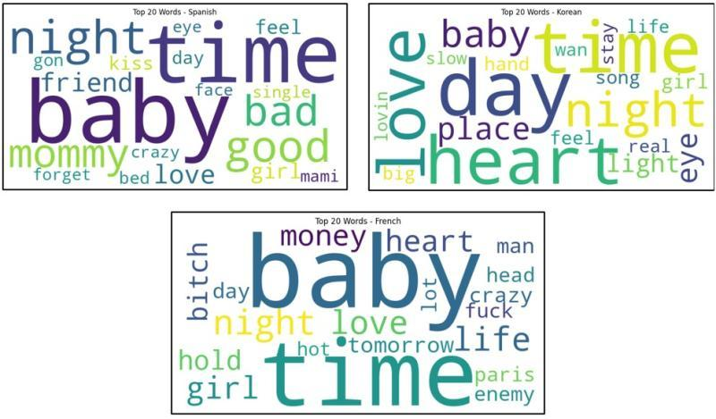
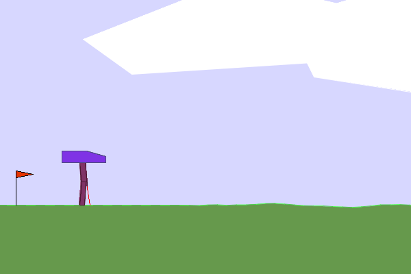
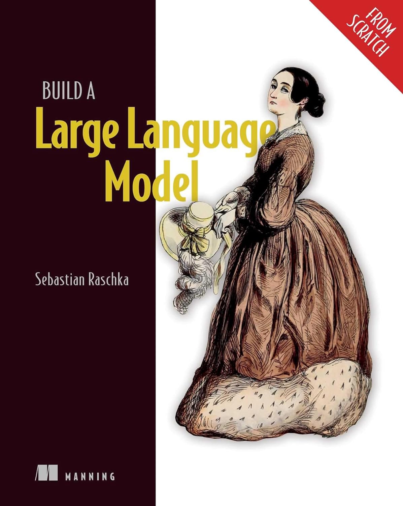
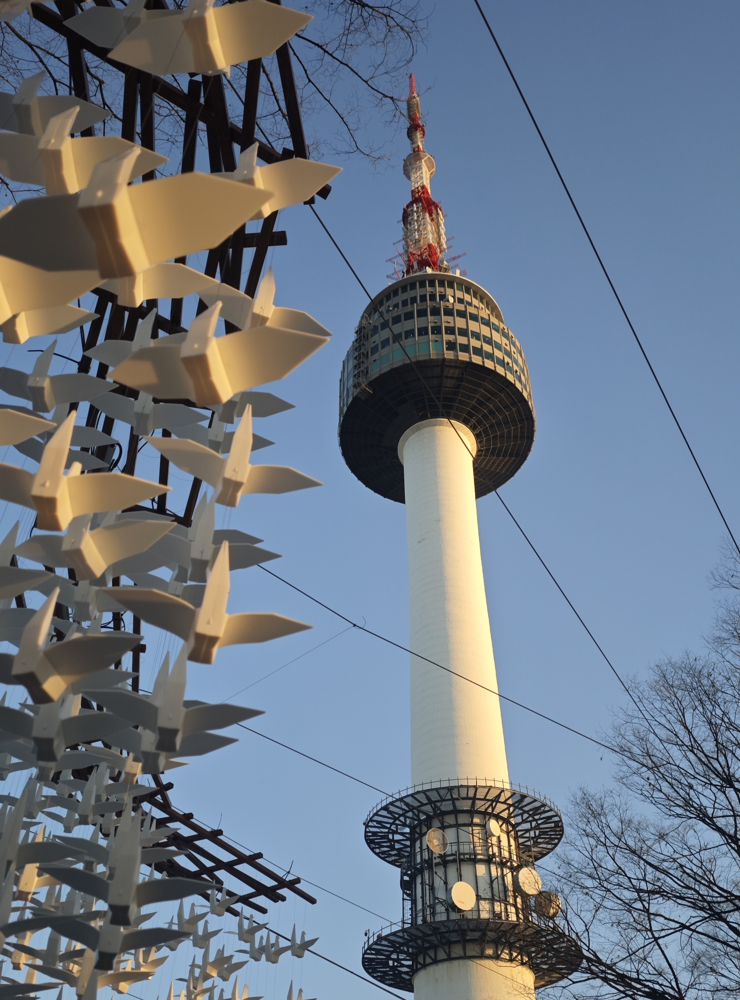

|
Alexis DHERMY
Bonjour! 🇫🇷
I am a final-year graduate student finishing my Master of Science in Engineering at EPF Engineering School (Paris, France), specializing in Computer Science and Artificial Intelligence.
Following a strong foundation in mathematics and physics through an intensive preparatory cycle, I built my core AI foundations during an exchange semester at Sungkyunkwan University (SKKU) in Seoul.
My journey bridges applied AI engineering and research: I developed LLM-driven multimodal dialogue systems for the Pepper humanoid robot at Air France Industries and architected an enterprise RAG system during my Master's thesis at Viridien (R&D Dept.).
Working closely with research teams solidified my desire to pursue fundamental AI research rather than pure engineering. Driven by my academic experience in Seoul, I am now aiming to join an M.S. in AI in South Korea (Spring 2027).
P.S. When I am not behind a screen, I train and compete in track and field. I specialize in the 100m, 200m, and the long jump.
|
|
🎓 Finished my Master's thesis internship at Viridien and preparing my oral defense on August 28th.
🇰🇷 Actively preparing applications for M.S. in AI in South Korea (Spring 2027 entry).
📖 Currently reading Build a Large Language Model (From Scratch) by Sebastian Raschka.
|
- Generative & Agentic AI: Large Language Models (LLMs), Reasoning Models, Multi-Agent Systems, Efficient Inference
- Embodied AI & Robotics: Reinforcement Learning, Human-Robot Interaction, Autonomous Systems, World Models
|
|

|
EPF Engineering School — Paris-Cachan, France 2021 – 2026
M.S. in Engineering (French Diplôme d'Ingénieur)
Major: Intelligent Systems & Digital Technologies – AI & Cloud Computing Track
- GPA: 15.87/20 | Rank: Top 3% of cohort
- 2-year intensive preparatory cycle (Mathematics & Physics), 1-year general engineering, 2-year specialization
- Thesis: LLM-Based RAG Architecture for Enterprise Systems (Viridien) | Advisor: Prof. Zehira Haddad
- Relevant Coursework: Generative AI, Deep Learning, Machine Learning, Probability & Statistics, Linear Algebra, Software Engineering, DevOps, Cloud Computing
|
|

|
Sungkyunkwan University (SKKU) — Seoul, South Korea Fall 2024
Exchange Semester in Artificial Intelligence
College of Computing and Informatics – School of Convergence
- GPA: 4.10/4.5
- Relevant Coursework: Reinforcement Learning, Natural Language Processing, Large Language Models, AI Search Algorithms, Data Science
|
- National Engineering Entrance Merit Distinction:
- Awarded "Grand Classé" status, reserved for top-tier candidates among 10,000+ national applicants in the Concours Avenir, one of France's most competitive post-high school entrance examinations to join an engineering school.
- Granted exam-exempt direct admission to EPF Engineering School based on academic excellence.
|
|

|
AI Software Engineer — Viridien (R&D Department), Massy, France Feb 2026 – Jul 2026
Master's Thesis Internship — Advisor: Prof. Zehira Haddad
Architected an advanced RAG system parsing complex geophysical documentation and DSLs, raising retrieval accuracy from 54% to 90%. Built a MCP server exposing 5 tools for LLM agent workflows and containerized the platform using Docker, Qdrant, MongoDB, and Ollama.
|
|

|
Human-Robot Interaction Developer — Air France, Orly, France Sep 2025 – Jan 2026
Corporate Academic Project
Engineered native Android interaction applications (Kotlin, SoftBank QiSDK) on the Pepper humanoid robot, integrating Mistral LLMs into the dialogue pipeline for context-aware conversational flows.
|
|

|
Backend & Cloud Developer — EPF Projets, Cachan, France Jul 2025 – Oct 2025
Freelance
Engineered REST APIs (Node.js) for a carbon-footprint mobile application integrating ADEME and Open Food Facts environmental databases. Implemented a hybrid Firebase/SQLite backend and deployed the app on the Google Play Store.
|
|

|
Music Recommendation Using NLP — SKKU Nov 2024 – Dec 2024
Alexis DHERMY, Pablo Picó Salort — Professor Youngeun Koo
Built an NLP-based music recommendation system using transformer models to analyze lyrics and user preferences. Achieved 82% accuracy in genre classification and implemented collaborative filtering for personalized recommendations.
|
|

|
Teaching a Robot to Walk with Reinforcement Learning — SKKU Nov 2024 – Dec 2024
Alexis DHERMY, 양대찬, 김정연 — Professor Jaekwang Kim
Trained a 2D bipedal robot in Gymnasium with custom reward shaping (optimizing speed, forward progress, and joint stability), achieving 3x the walking distance over baseline A2C. Implemented PPO to mitigate policy collapse, boosting average episode moving distance by 132%.
|
|
|
Track & Field — Sprint & Long Jump
I have been training and competing in track & field for over a decade with the Plessis-Robinson Athletic Club (PRAC), specializing in the 100m, 200m, and long jump.
- Titles: Hauts-de-Seine Long Jump Champion (2025), Île-de-France Long Jump Vice-Champion (2023)
- Personal Bests: 100m: 11.29s (IR2) | 200m: 23.27s (IR4) | Long Jump: 6.24m (R1)
|
|

|
Selected Bookshelf
- Build a Large Language Model (From Scratch) — Sebastian Raschka
- Deep Learning with Python — François Chollet, Matthew Watson
- Build a Reasoning Model (From Scratch) — Sebastian Raschka
|
|

|
Travel & Cultural Immersion
Passionate about exploring new cultures and perspectives. Having lived and studied in Seoul during my exchange at SKKU, I developed a strong appreciation for South Korea's dynamic research culture, environment, and daily life.
|
|